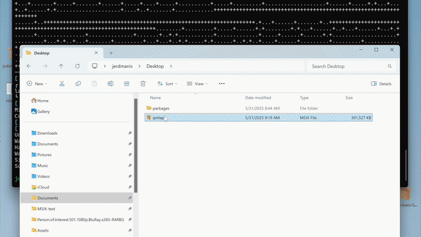

MSIX
MSIX is the modern Windows application package format. AppBundler builds .msix packages with a fully open-source toolchain, so packages can be created on any platform without the Windows SDK.

Build pipeline
The standard Microsoft workflow packs a staging directory with MakeAppx and signs it with SignTool. Because these Windows SDK tools cannot be redistributed, AppBundler uses open-source equivalents:
StagingDir → msixpack → osslsigncode → MyApp.msixBoth tools are cross-compiled with BinaryBuilder, which makes it possible to build and sign MSIX packages from Linux and macOS as well as Windows.
Package contents
Before packing, AppBundler assembles StagingDir/ with the following layout:
| Path | Purpose |
|---|---|
AppxManifest.xml | Package identity, entry point, and capabilities |
resources.pri | Resource index; required for icons to render correctly |
Assets/ | Application icons |
Msix.AppInstaller.Data/MSIXAppInstallerData.xml | App Installer configuration |
MyApp.exe | Application launcher |
Sandboxing and permissions are set through the capabilities in AppxManifest.xml. The target system must have the Universal C Runtime (UCRT).
AppBundler switches MyApp.exe to the Windows GUI subsystem so that no console window appears on launch. For GUI applications this currently leaves a zombie console process behind. This is a known limitation.
Code signing
For a user-friendly installation, the MSIX must be signed with a certificate chaining to a trusted root. Options as of September 2026 include:
- Microsoft Store signing (free, subject to review)
- Azure Artifact Signing (€10/month)
- Certum Open Source Code Signing (€25/year)
Within an organisation, administrators may also deploy an internal trusted root to company machines and sign applications with it.
AppBundler currently expects a password-protected .pfx file, while many providers deliver keys on hardware tokens or through cloud signing services. Hardware token support is planned. Until then, build with --skipsign and sign separately, or use the lower-level signing API described in reference.md.
The publisher in AppxManifest.xml must exactly match the certificate subject, including order, spaces, and commas. Set it in LocalPreferences.toml:
msix_publisher = "CN=AppBundler, C=XX, O=PeaceFounder"Self-signing
For testing, AppBundler can generate a self-signed certificate at msix/certificate.pfx:
AppBundler.install_msix_certificate("msix/certificate.pfx")The generated password is printed to stdout. Pass it to the build with --password=mypassword. For a quick local build, use --selfsign instead: it signs with a throwaway certificate and ignores msix/certificate.pfx.
Either way, the package is trusted only on machines where its certificate has been installed, as described below.
Installing self-signed packages
A self-signed package installs only after its certificate is added to the trusted root authorities, which can be done manually from the package properties (guide). To automate this, AppBundler provides recipes/msix/bootstrap.ps1, which extracts the certificate, trusts it, and launches the installer:
bootstrap.ps1 myapp.msix # graphical installer
bootstrap.ps1 myapp.msix -Console # console installationThis also enables one-line web installs: a hosted install.ps1 can download the MSIX and bootstrap.ps1 and run bootstrap.ps1 myapp.msix -Console, invoked with e.g.:
irm https://example.com/install.ps1 | iexInstaller EXE
AppBundler can wrap the MSIX in a 7-Zip self-extracting executable. On launch it extracts the package and bootstrap.ps1 to a temporary directory and runs bootstrap.ps1 myapp.msix.
Enable it with -Dmsix2exe=true or persistently with msix2exe = true in LocalPreferences.toml. Set msix2exe_windowed = true to launch the graphical installer after extraction.
API
msix_config = MSIX(project; selfsign = true)
bundle(msix_config, msix_archive) do app_stage
# install files into app_stage
end
msix2exe_config = MSIX2EXE(project)
repack(msix_archive, msix2exe_config, exe_archive)AppBundler.MSIX — Type
MSIX([project]; arch, compress, windowed, kwargs...)Create an MSIX configuration object for Windows application packaging.
When project is provided, configuration files are searched in project, then project/meta, then the built-in recipes directory. Application parameters (APP_NAME, APP_VERSION, etc.) are read from project/Project.toml, and packaging defaults (path_length_threshold, selfsign, etc.) are read from project/LocalPreferences.toml. Without project, only the built-in recipes and the active project's LocalPreferences.toml are used.
Arguments
project: Path to a project directory containingProject.toml, optionalLocalPreferences.toml, and optionalmeta/msix/overrides
Keyword Arguments
prefix = joinpath(dirname(@__DIR__), "recipes"): Base directory or array of directories to search for configuration files in sequential orderpreferences: Dictionary of packaging preferences used for the defaults below; read fromprojectwhen given, otherwise from the active projecticon = get_path(prefix, ["msix/Assets", "msix/icon.png", "icon.png"]; dir = true): Path to application icon file or Assets directoryappxmanifest = get_path(prefix, "msix/AppxManifest.xml"): Path to MSIX application manifest templatecommand::Cmd: Command launching the application; defaults tomsix.commandpreference. Its executable and escaped arguments are exposed to the manifest template asCOMMAND_EXEandCOMMAND_ARGSresources_pri = get_path(prefix, "msix/resources.pri"): Path to package resource index filemsixinstallerdata = get_path(prefix, "msix/MSIXAppInstallerData.xml"): Path to installer configuration templatepath_length_threshold: Maximum allowed path length; defaults tomsix.path_length_thresholdpreferenceskip_long_paths: Iftrue, skip files exceeding path length threshold; iffalse, throw an error; defaults tomsix.skip_long_pathspreferenceskip_symlinks: Iftrue, skip file and directory symlinks; defaults tomsix.skip_symlinkspreferenceskip_unicode_paths: Iftrue, skip files with non-ASCII paths; defaults tomsix.skip_unicode_pathspreferenceselfsign: Iftrue, generate a temporary self-signed certificate instead of usingpfx_cert; defaults toselfsignpreferencepublisher: Publisher string embedded in the manifest (e.g."CN=Example, O=Example Ltd"); defaults tomsix.publisherpreference, normalized to", "-separated fieldspfx_cert = get_path(prefix, "msix/certificate.pfx"): Path to code signing certificate;nothingwhen theskipsignpreference is setwindowed: Iftrue, the application runs without a console window; defaults towindowedpreferencecompress: Iftrue, pack the staging directory into an.msixarchive; defaults tocompresspreferencearch = Sys.ARCH: Target CPU architecturepredicate: Bundler predicate used for hook selection; defaults tobundlerpreferenceparameters: Dictionary of parameters for Mustache template rendering. Always containsWINDOWED,PUBLISHER,COMMAND_EXEandCOMMAND_ARGS, derived from the keywords above. Whenprojectis provided, it is further populated fromProject.tomland preferences:APP_NAME,APP_DISPLAY_NAME,APP_VERSION,BUILD_NUMBER,APP_SUMMARY,APP_DESCRIPTION,BUNDLE_IDENTIFIER,PUBLISHER_DISPLAY_NAME, andMODULE_NAME(Julia-based bundles only)
Examples
MSIX() # default recipes only
MSIX(app_dir) # project with Project.toml parameters
MSIX(app_dir; skip_long_paths = true) # project with keyword overrides
MSIX(app_dir; command = `bin\myapp.exe --flag "a b"`) # custom launch command
MSIX(; prefix = ["custom/", "recipes/"]) # explicit search pathAppBundler.MSIX2EXE — Type
MSIX2EXE([project]; prefix, preferences, bootstrap, windowed, sfx_stub, title)Create an MSIX-to-EXE configuration object for creating self-extracting Windows installers from MSIX packages.
The resulting installer is a 7-Zip-based self-extracting executable. When launched, the executable extracts the MSIX package and the configured PowerShell bootstrap script to a temporary directory and then executes the bootstrap script with the extracted MSIX package as its argument.
This is useful for distributing self-signed MSIX packages, since the bootstrap script can extract and install the package's signing certificate in the system's root, before launching installer on the MSIX installer.
When project is provided, configuration files are searched in project, then project/meta, then the built-in recipes directory. Without project, only the built-in recipes and the active project's LocalPreferences.toml are used.
Arguments
project: Path to a project directory containing optionalProject.toml,LocalPreferences.toml, and optionalmeta/msix/overrides
Keyword Arguments
prefix = joinpath(dirname(@__DIR__), "recipes"): Base directory or array of directories to search for configuration files in sequential order- `bootstrap: Path to the bootstrap script which is embedded in the self-extracting installer. The script is invoked with the extracted MSIX package as its first argument
windowed = preferences["msix2exe_windowed"]: Iftrue, run the bootstrap process without displaying a console window and launch graphical MSIX installersfx_stub = get(preferences, "msix2exe_sfx_stub", MSIX2EXEPack.extract_stub()): Path to the 7-Zip self-extracting executable stub used to construct the installertitle = "Installer": Title displayed by the self-extracting installer
Bootstrap Script
The bootstrap script is invoked after the embedded files have been extracted, with the MSIX package path supplied as its first argument. For example:
powershell.exe bootstrap.ps1 msix_archive.msix